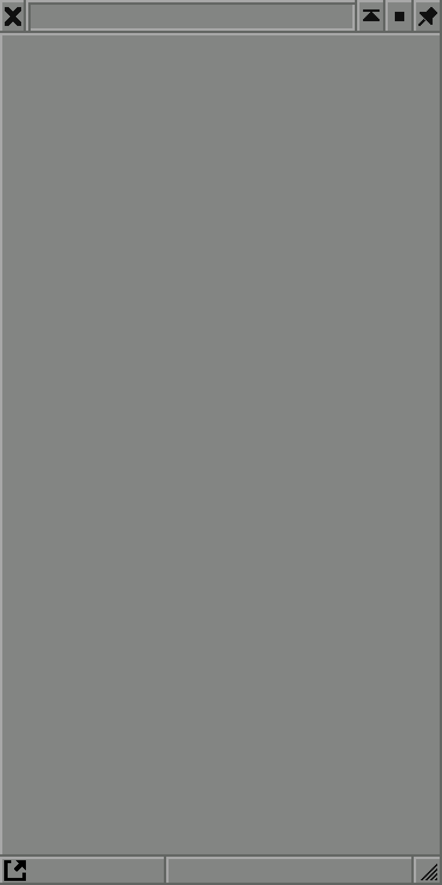
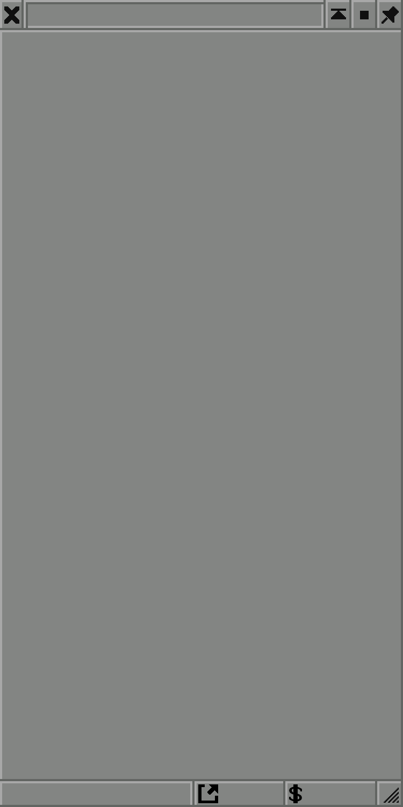

Sets the elevation that will be zero in the heightmap, everything below is cut off.
Depending on zoom level, the finer granularities are unavailable.
The heightmap can be loaded on its own, via "Play Heightmap".
In the scenario editor, the heightmap can be loaded (save icon menu), alongside the towns.json file, under the towns menu -> "Generate towns" -> "Load from file".
Generating random industries recommended.

This project is being run by me on my own, as the developer and hoster. The source code, alongside more thorough documentation, can be obtained on my GitHub.
Since this is a personal project, I am offering this service completely free of charge and open source. If you feel financially able enough however, you are welcome to make a donation, so I can afford to at least cover the costs associated with hosting, and if those tiny costs are covered, use the rest to pay off my student loans.
I very irregularly work on other projects too, so feel free to check out my GitHub to see if any of them are released yet.
The generated map will have a resolution of 1024x1024 pixels.